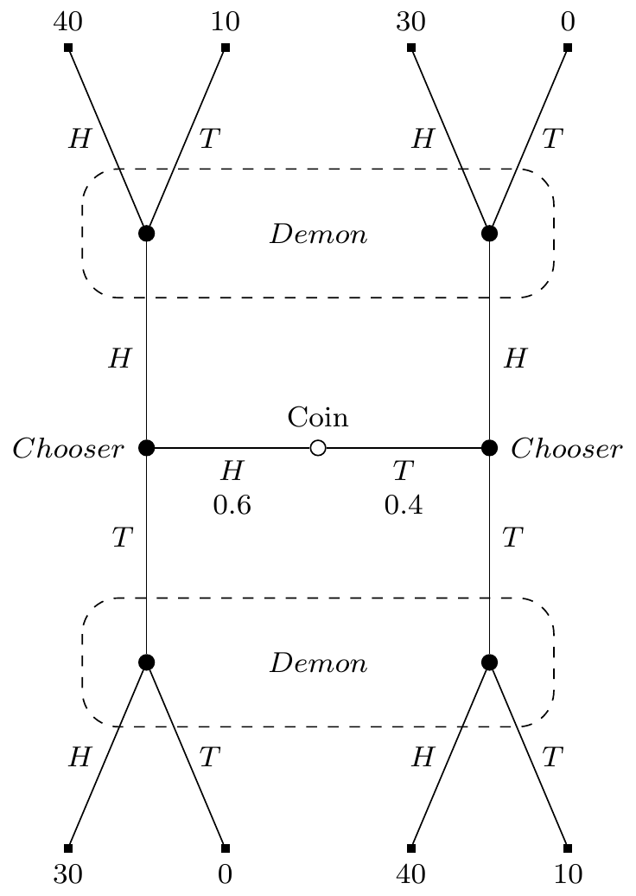

10 Substantive
Here are two interesting characters. Piz wants to put mud on his pizza. This won’t bring him joy, or any other positive emotions; he has a non-instrumental desire for mud pizza. Za wants to eat a tasty pizza, and believes that putting mud on his pizza will make it tasty. There is a long tradition of saying that the point of philosophical decision theory is not to evaluate beliefs and desires, but merely to say what actions those beliefs and desires do or should issue in. On such a view, both Piz and Za should (or at least will) put mud on their pizzas. Here is David Lewis expressing such a view.1
1 I’m using Lewis as an example of the orthodox view that decision theory does not care about whether beliefs and desires are substantively rational, just that they are coherent. But note that Lewis has an idiosyncratic view in the neighbourhood of this one. He denies that the point of decision theory is to guide or judge action. He thinks that decision theory is primarily description, not normative. I agreed with that in Chapter 2. But he thinks its descriptive role is primarily in defining belief and desire; I think it is in explaining social phenomena.
The central question of decision theory is: which choices are the ones that serve one’s desires according to one’s beliefs? (Lewis 2020, 472)
We need one caveat on this. Philosophical decision theories typically do not issue verdicts unless the chooser satisfies some coherence constraints. So it’s not quite that the theory says nothing about what the beliefs and desires should be. It’s that it says nothing substantive about what the beliefs and desires should be. Purely structural constraints, like transitivity of preferences, or belief in the law of excluded middle, may be imposed.
The point of this chapter is to argue that this is not enough. Decision theory is a theory of what rational agents do. And rational agents are rational; they don’t have beliefs that are unsupported by their evidence. I also suspect they don’t have bedrock desires for saucers of mud, but here I’ll focus on the constraints about belief.
The opposing view is that decision theory is part of the theory of structural rationality. Not doing what maximises expected utility according to one’s beliefs is like not believing the logical consequences of one’s beliefs. It is, according to the theorist of structural rationality, bad even if the initial beliefs are bad.
I’m going to offer two arguments against this. First, I’ll argue that this notion of structural rationality, if it is even coherent, is not philosophically interesting. This is a big debate, and I don’t suspect I’ll convince many people of something this sweeping.2 Hopefully I’ll convince some, but I don’t want to rest the argument on these general considerations. So second, I’ll focus more on decision theory, and argue that reflecting on an important case from the game theory literature, the beer-quiche game due to Cho and Kreps (1987), gives us reason to deny that decision theory is part of the theory of structural rationality.
2 My own book length contribution to this debate is in Normative Externalism (Weatherson 2019).
10.1 Against Structural Rationality
At least sometimes, game theorists impose non-structural, substantive conditions on the beliefs of players. Most notably, the “intuitive criterion” of Cho and Kreps (1987) is meant to be continuous with other equilibrium conditions, and is a substantive constraint. Someone who violates it has coherent beliefs that don’t conform to their evidence. The intuitive criterion takes some time to set up, but I’ll get to a simplified version of it later in this section.
First, I’ll note some general reasons for scepticism about this use of the substantive-structural distinction. One obvious point is that Piz and Za do not look like rational choosers. Another is that this draws distinctions between overly similar characters, such as these two, Cla and Sic. Both of them have taken classes in classical statistics, but only skimmed the textbooks without attending to the details. Cla came away with the belief that any experiment with a P value less than 0.05 proved that its hypothesis is true. Sic came away with a standing disposition to belief the hypothesis whenever there was an experiment with a P value less than 0.05. Cla is incoherent; there is no possible world where that belief is true. Sic is coherent; any one of their beliefs could be true. It’s just they just have a disposition to often form substantially irrational beliefs. Personally, I don’t think the difference between Cla and Sic is important enough to be philosophically load bearing. Lastly, it has proven incredibly hard to even define what makes a norm structural. The most important recent attempt is in Alex Worsnip’s book Fitting Things Together: Coherence and the Demands of Structural Rationality (Worsnip 2021). Here’s his definition:
Incoherence Test. A set of attitudinal mental states is jointly incoherent iff it is (partially) constitutive of (at least some of) the states in the set that any agent who holds this set of states has a disposition, when conditions of full transparency are met, to revise at least one of the states. (Worsnip 2021, 132)
This won’t capture nearly enough. If probabilism is correct, then non-probabilists about uncertainty like Glenn Shafer (1976) endorse incoherent views. If expectationalism is correct, then non-expectationalist decision theorists, like Lara Buchak (2013), endorse incoherent views. If classical logic is correct, then intuitionist logicians like Crispin Wright (2021) are incoherent. Those three all seem to meet Worsnip’s conditions of full transparency, and don’t seem disposed to revise their beliefs. Maybe this is just a problem with Worsnip’s definition, but it is also a reason to be sceptical that there even is a distinction to be drawn here. Wooram Lee (n.d.) raises some different challenges for Worsnip, and offers a rival theory. But for that theory to work, Lee requires that when a dialethist proposes to solve the Liar Paradox by saying the liar sentence is both true and not true, they are being insincere. The idea is that sincerely saying p requires believing p and not believing its negation. But this simply isn’t part of the concept of sincerity, and as much as I find the dialethist solution to the Liar implausible, I think the dialethists I know have been perfectly sincere in offering it. Maybe there is some theory of coherence waiting to be found, but the search for one feels like a degenerating research program.3
3 See also Heinzelmann (n.d.) for a different set of reasons to be sceptical that there is a notion of coherence that can do the work its philosophical defenders want.
10.2 The Beer-Quiche Game
Even if the substantive/structural distinction can be made precise, and shown to do philosophical work, it won’t track the notion game theorists most care about. We can see this with a version of the beer-quiche game Cho and Kreps (1987), here translated into decision-theoretic language.
There are five steps in the game. (I’m going to call it the beer-quiche game to refer back to Cho and Kreps, and to distinguish it from the similar game earlier that is shown in Figure 4.1,)
- A coin will be flipped, landing Heads or Tails. It is biased, 60% likely to land Heads. It will be shown to Chooser, but not to Demon.
- Chooser will say either Heads or Tails.
- Demon, knowing what Chooser has said, and being arbitrarily good at predicting Chooser’s strategy4. will say Heads if it is more probable the coin landed Heads, and Tails if it is more probable the coin landed Tails.5
- Chooser is paid $30 if Demon says Heads, and nothing if Demon says Tails.
- Chooser is paid $10 if what they say matches how the coin landed, and nothing otherwise. This is on top of the payment at step 4, so Chooser could make up to $40.
4 That is, what Chooser will do if Heads, and what they will do if Tails.
5 If both are equally likely, Demon will flip a fair coin and say how it lands.
If you prefer things in table form, the payouts are in Table 10.1.
| Coin | Chooser | Demon | Dollars |
|---|---|---|---|
| H | H | H | 40 |
| H | H | T | 10 |
| H | T | H | 30 |
| H | T | T | 0 |
| T | H | H | 30 |
| T | H | T | 0 |
| T | T | H | 40 |
| T | T | T | 10 |
Or in graphical form it looks like
What will Chooser do? There are two coherent things for Chooser to do, though each of them is only coherent given a background belief that isn’t entailed by the evidence.
- Chooser could say Heads however the coin lands. Demon gets no information from Chooser, so their probability that the coin landed Heads is 0.6, so they will say Heads. Further, Chooser believes that if they were to say Tails, Demon would say Tails, so saying Heads produces the best expected return even after seeing the coin.
- Chooser could say Tails however the coin lands. Demon gets no information from Chooser, so their probability that the coin landed Heads is 0.6, so they will say Heads. Further, Chooser believes that if they were to say Heads, Demon would say Tails, so saying Tails produces the best expected return even after seeing the coin.
While both of these are coherent, there is something very odd, very unintuitive about option 2. I guess we’ve been trained to be sceptical when philosophers report intuitions, but here we have a very large data pool to draw on. Cho and Kreps reported essentially the same intuition. Their paper has been cited tens of thousands of times, and I don’t think this intuition has been often questioned. Option 2, while coherent, is unintuitive. It is the kind of option that the theory of rationality behind game theory, and behind decision theory, should rule out.
But what about it is incoherent? One might think it is because it has an expected return of $34, while option 1 has an expected return of $36. But we showed in section Indecisive ref that using expected returns to choose between coherent options leads to implausible results. Moreover, if you change the payout in the bottom row to $50, the intuition doesn’t really go away, but the expected return of option 2 is now $38; higher option 1’s payout.6 Alternatively, one might think it is because option 2 requires Chooser to believe a counterfactual that is not entailed by the evidence. But option 1 also requires Chooser to believe a counterfactual that is not entailed by the evidence. That can’t be the difference between them, but it is closer to the truth.
6 I believe if you change that payout to $65, the various regret based theories I discussed in Chapter 7 also start preferring option 2. But applying these theories to complex cases is hard, so I’m not quite sure about this.
What Cho and Kreps argue, persuasively, is that the difference between the options is that in one case the counterfactual belief is reasonable, and in the other it is unreasonable. Assume Chooser plans to adopt option 1. But when it becomes time to play, they change their mind, and say Tails. What would explain that? Not the coin landing Heads - given their plan, they will get the maximum possible payout by sticking to the plan (assuming Demon has done their job). No, the only plausible explanation is the coin landed Tails, and Chooser was (foolishly) chasing the extra $10. In option 1, Chooser believes the counterfactual that’s grounded in Demon picking an explanation that makes sense. What about in option 2? Here, everything is back to front. If Chooser is ever going to depart from their plan, it’s when the coin lands Heads. Then Chooser might chase the extra $10 by saying Heads. But Chooser has to believe that were they to depart from the plan, Demon would draw the explanation that makes no sense whatsoever, that they gave up on their plan even though it was about to lead to the best possible outcome. This makes no sense at all. And in fact it makes less sense the more you increase the payout in line 8.
So that’s why decision theory requires substantive rationality. The right decision theory should say to take option 1. And the argument against option 2 is not that it is incoherent, but that carrying it out requires believing Demon will do things that make no sense given Demon’s evidence. It is substantive, not structural, rationality that rules out option 2. And yet, as the game theorists have insisted, option 2 must be ruled out. So decision theory should be sensitive to substantial rationality.